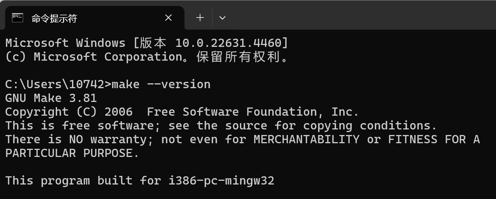

Make 安装
- 打开 GNUWin32 Make 的官方网站 。
- 下载版本为 3.81 的安装包。
- 运行安装程序，选择安装目录，可以使用默认位置，或者根据需要自定义安装目录。
- 记住上述选择的安装目录。
- 安装完成后，将 Make 的路径添加到平台环境变量中：
- 打开 控制面板 > 平台 > 高级平台设置 > 环境变量。
- 在 平台变量 中找到
Path，双击编辑，将 3 中选择的 Make 的安装目录路径（例如：C:\Program Files (x86)\GnuWin32\bin）添加到变量中，点击 确定 保存。
- 在终端（或 cmd 命令提示符）中输入
make --version，出现如下图所示版本号即表示 Make 已安装成功。 
注意
必须使用 Make 的 3.81 版本，否则构建可能会失败。如果安装了多个版本的 Make，请检查构建 Carla 时在 PATH 中使用的版本是否为 3.81。您可以通过运行来检查默认的 Make 版本 make --version。（运行可能出现由于找不到libintl3.dll， 说明需要 Visual C++ Redistributable for Visual Studio 2015，但是vs2019安装不了低版本，所以安装了make-4.4.1 ）。